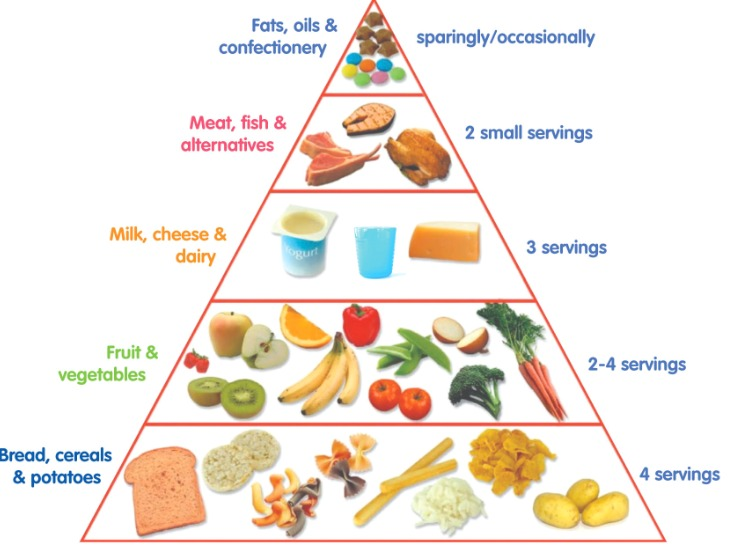
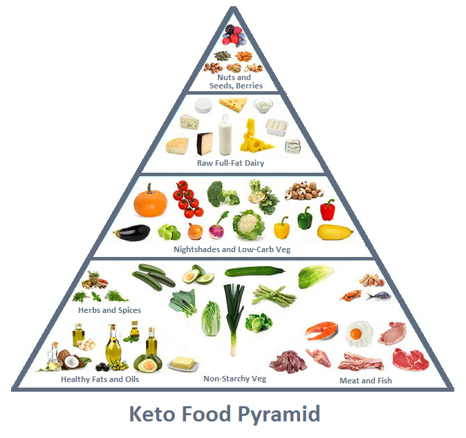

How keto really works
Im here to tell you that no,
it's not too good to be true.
As you may have already heard, the food pyramid we were raised on is not
exactly ideal. It is known as the SAD and its the standard american diet.
This has slowly lead to a rise in metabolic diseases and heart conditions
due to our over reliance on carbs.

The keto food pyramid
As you can see, the keto food pyramid is very different. It is essentially the complete opposite of the SAD pyramid. With healthy fats and meats taking up the largest section and not a section for carbs.
Our bodies don't only require carbohydrates to function. When we eat carbs such as bread and pasta, it is converted into glucose in our blood. That spike in sugar causes a dopamine rush which leads to increased appetite, cravings and disease in the long run. Adversely, if you consume a keto diet of mostly healthy fat then most of those symptoms of relying on sugar subside. Following keto can often fix blood sugar problems in diabetics! It just makes more sense!